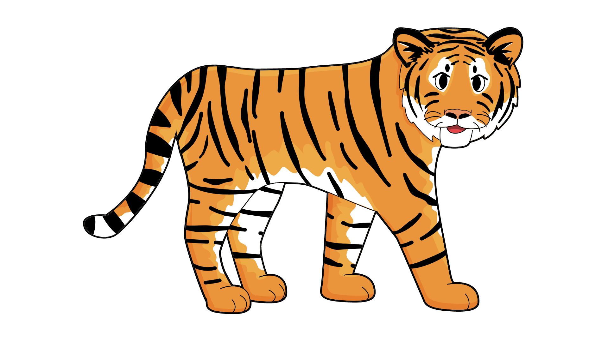
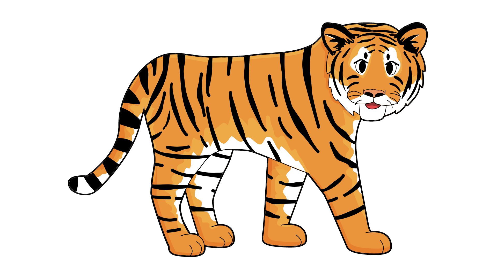
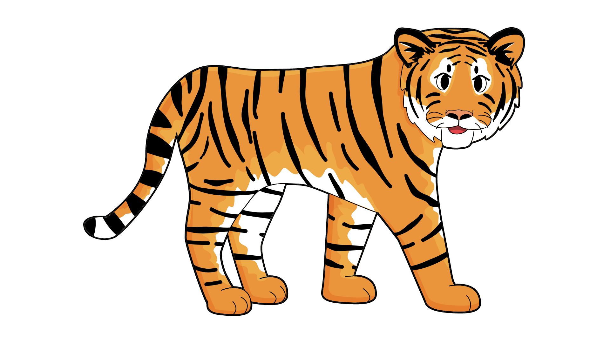

The Malayan tiger is a critically endangered subspecies of tiger, known for its striking orange coat with black stripes. It is native to the Malay Peninsula and is one of the smallest tiger subspecies.
The Malayan tapir, also known as the Asian tapir, is the largest of the four tapir species native to the forests of Southeast Asia.
The proboscis monkey is an arboreal Old World monkey with an unusually large nose, a reddish-brown skin color and a long tail. It is native to the southeast Asian island of Borneo.
Orangutans are large, reddish-brown primates native to Borneo and Sumatra. They are highly intelligent, arboreal, and primarily solitary.
